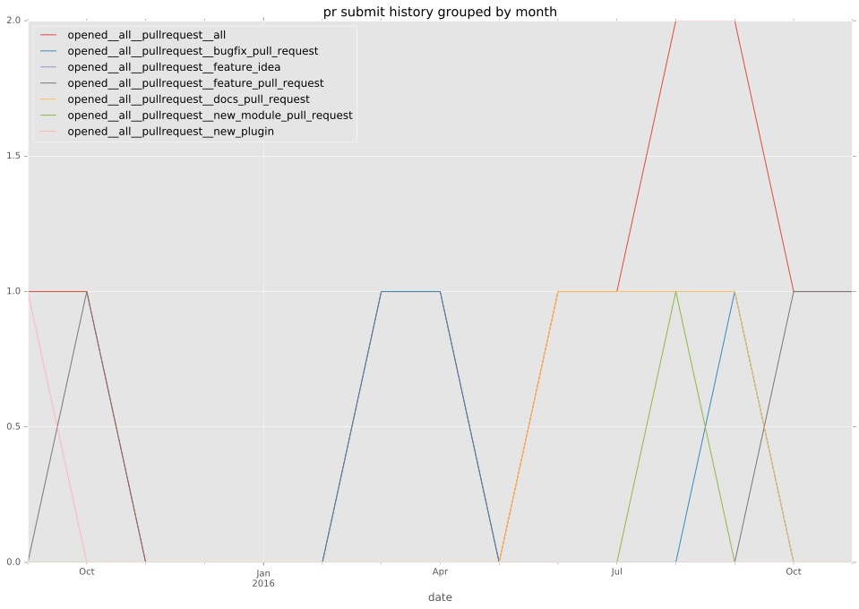
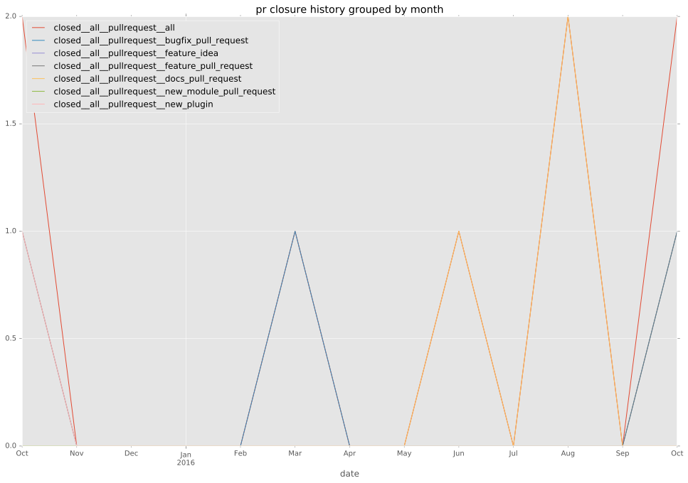
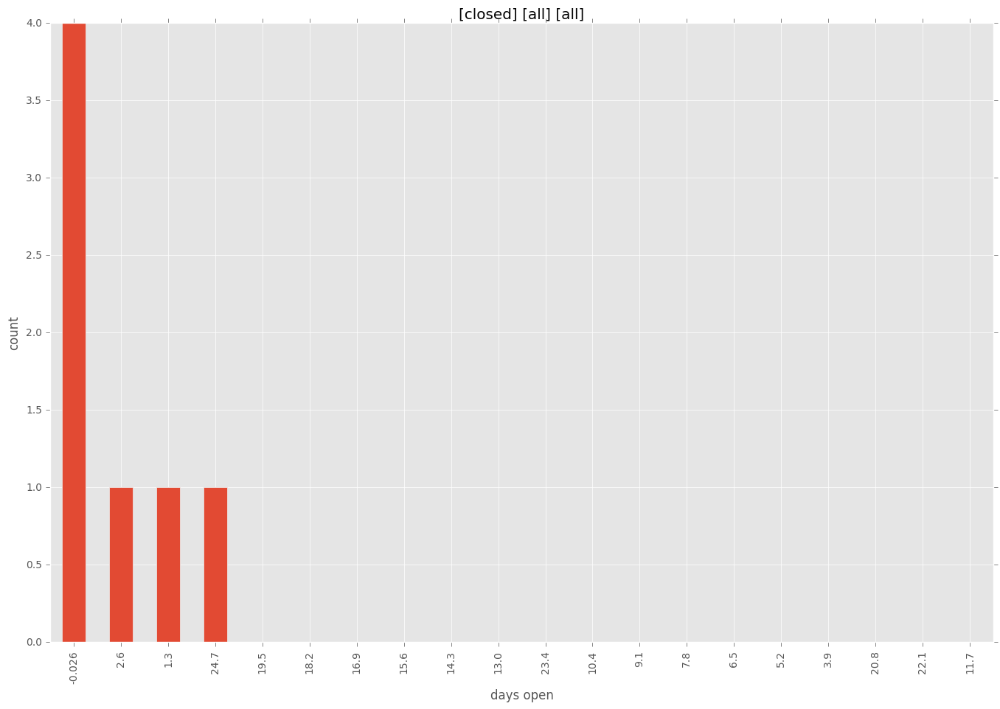
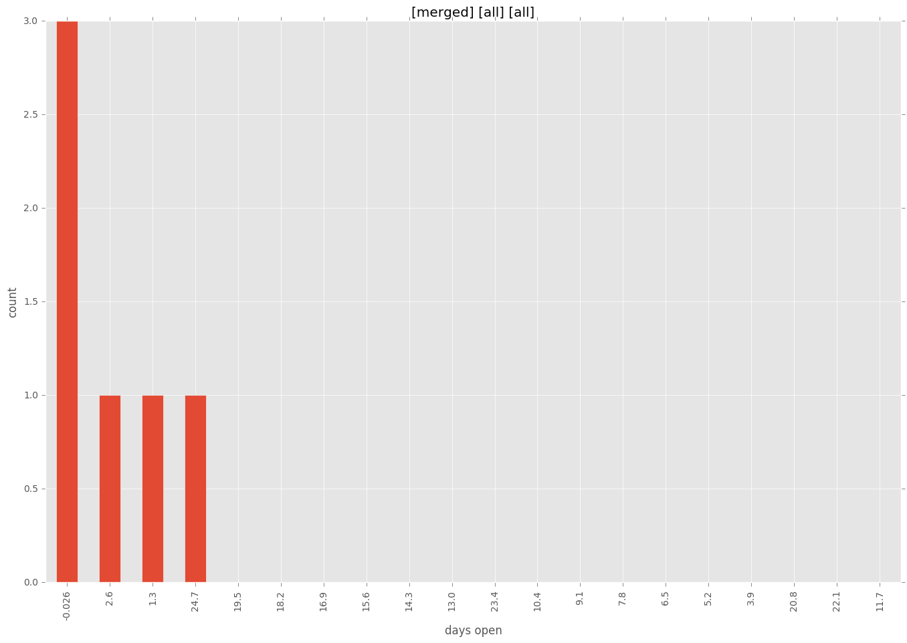
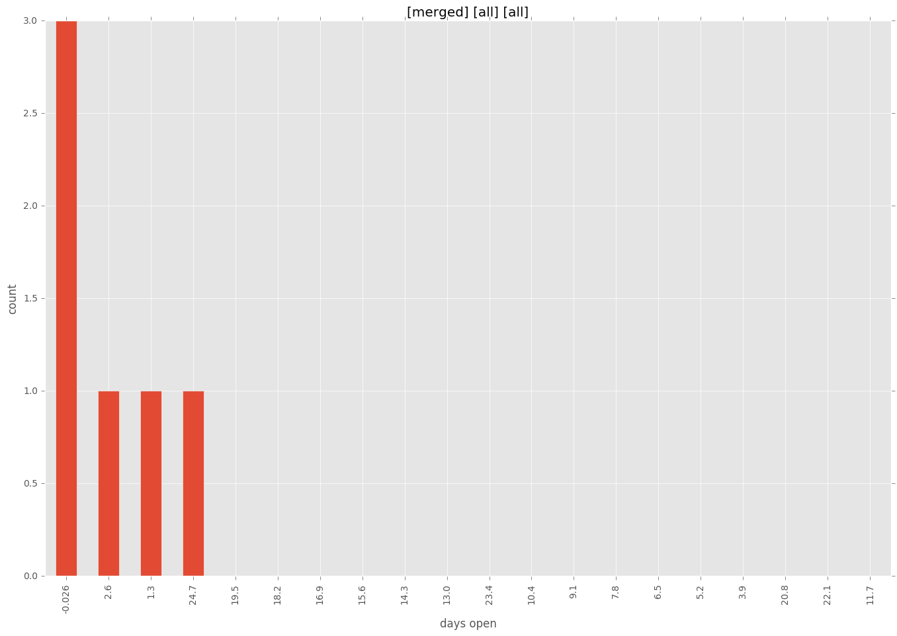

authors
- dagnello
maintainers
- emonty
- shrews
- juliakreger
- j2sol
- rcarrillocruz
contributors
- larsks : 5 commits
- dagnello : 18 commits
- Shrews : 8 commits
- abadger : 5 commits
total issue counts
feature pull request: 1
pullrequest: 6
docs pull request: 1
bugfix pull request: 3
issue: 1
new plugin: 1
bug report: 1
issue history
pullrequest history



days open by issue type
bugfix pull request
count: 6
std: 0.0
min: 0
max: 0
median: 0.0
mean: 0.0
all
count: 13
std: 9.49696307734
min: 0
max: 26
median: 0.0
mean: 4.76923076923
pullrequest
count: 0
std: nan
min: nan
max: nan
median: nan
mean: nan
docs pull request
count: 2
std: 0.0
min: 2
max: 2
median: 2.0
mean: 2.0
feature pull request
count: 2
std: 0.0
min: 3
max: 3
median: 3.0
mean: 3.0
issue
count: 0
std: nan
min: nan
max: nan
median: nan
mean: nan
new plugin
count: 2
std: 0.0
min: 26
max: 26
median: 26.0
mean: 26.0
bug report
count: 1
std: nan
min: 0
max: 0
median: 0.0
mean: 0.0
closures grouped by total days open



 
